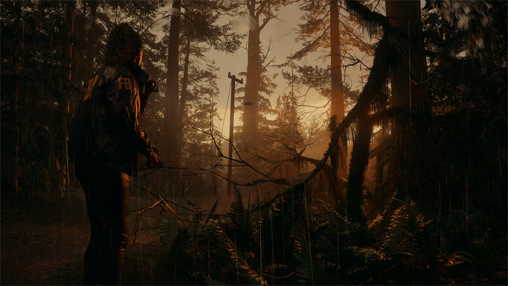
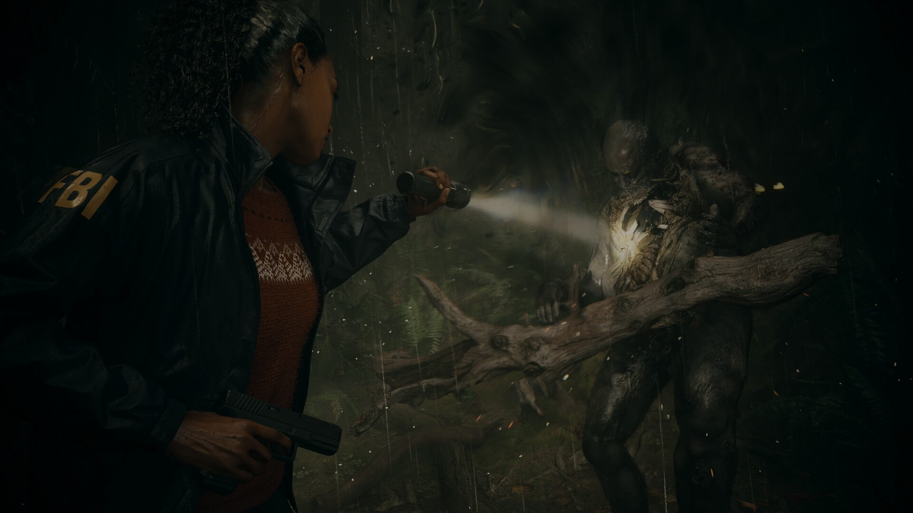
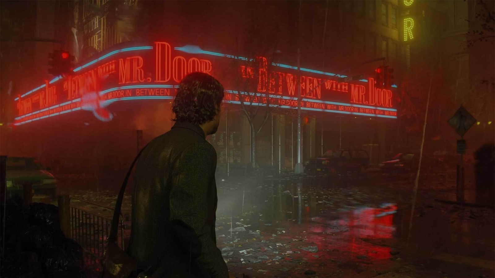

Light your way to: SiteName.com
Writer's Playground
Thirteen years after his wife went missing in the small town of Bright Falls, author Alan Wake is trapped inside a Dark Place that he can’t seem to write himself out of. As I sit down to type out this review of Alan Wake II, I can somewhat empathize. This is just so incomparable to anything else I’ve played in recent memory that it’s tough to work out exactly where to start. Alan Wake II is a single-player adventure that seamlessly shifts from slow-burn psychological terror to frantic survival-horror action, from gorgeously rendered game worlds to striking full-motion video sequences, and from morbid investigations to show-stopping musical surprises. It’s bloody, it's bonkers, and for the most part it's utterly brilliant. Coming in at the tail end of a bumper-crop gaming year packed with absolute bangers, Alan Wake II still manages to burn as brightly as a freshly fired signal flare.
Spanning two wildly contrasting realities, Alan Wake II’s roughly 17-hour story manages to be far more coherent than that of the original – despite its substantial increase in complexity. We pick things up in present day Bright Falls, taking control of FBI Agent Saga Anderson, who’s been dispatched to the small lakeside town to investigate the latest victim in a series of ritualistic slaughters: a body found beside Cauldron Lake with a gaping hole where his heart used to be. Saga is an instantly likable addition to the weird world that Alan Wake shares with Remedy Entertainment’s other supernatural game, Control. She’s dedicated to her casework but not above a bit of playful banter with her partner, Special Agent Alex Casey, and these opening couple of hours of mostly combat-free procedural investigation give the story a realistic grounding before the darkness starts to descend and every placid hillscape transforms into a harrowing hellscape.
The first hours of the game gives the story a realistic grounding
Part of the reason Alan Wake II’s main serial killer mystery and its numerous subplots are so easy to keep track of is due to the caseboard found in Saga’s metaphysical ‘mind place’, which can be accessed at any moment with the tap of a button. Each new piece of evidence, character profile, or foreshadowing manuscript page found in Bright Falls and its surroundings must be manually arranged onto a branching tree of red string and palm cards pinned to the wall, corralling it all into order and keeping you focused on the case. I’m not ashamed to say that I couldn’t get through a season of True Detective (at least, one of the good ones) without having one eye on my television and the other on a Reddit thread open on my phone, so I loved having this in-built method of keeping the facts straight.
As Saga’s investigation progresses in the early moments of Alan Wake II’s story, each discovery raises more unsettling questions than it answers: Why do so many of the locals behave as though they’ve known Saga for years? Why is the janitor character from Control performing karaoke in a local town hall? And why did that corpse suddenly haul his naked arse out of the morgue and into the woods? Although its difficulty level can be adjusted to three different settings, Alan Wake II’s mood is always set to uneasy mode.
The mystery deepens still when Alan Wake washes up onto the shore of Cauldron Lake, rambling about the Dark Place and surprised to learn that he’s been missing for the past 13 years. Then Alan Wake II really gets weird. From here, the perspective shifts back and forth between Saga’s search for the truth in Bright Falls and Alan’s desperate attempts to escape his doomed Dark Place dimension, with both sides gradually bleeding into each other in increasingly unpredictable and discombobulating ways – to the point that I could barely discern fact from fiction (within fiction) before eventually resolving into a supremely well-executed gut-punch of an ending that neatly ties off the bulk of the story threads while tantalizingly leaving a handful of loose ones to dangle. Remedy, if you make us wait another 13 years to tie these up (and start more) that will be much less endearing.
The Violence of the Lamps
Indeed Alan Wake II features more plots than a cemetery, and just as high a bodycount. The fundamentals of combat remain largely the same as the enjoyable flashlight-fueled fighting of the original, but its execution has been enhanced significantly. Enemies are once again literal shadows of their former selves, and the most efficient way to dispatch them is by using the boosted beam of your flashlight to burn away their cloudy darkness shields and blasting disgusting chunks of exposed flesh off their bones with your expanding arsenal of firearms. This time around glowing weak points will occasionally be revealed on an enemies’ body, and if you manage to successfully target them you can inflict substantially more damage and save a few precious ammo rounds in the process, which felt like a nice reward for taking an extra fraction of a second to carefully line up my shots.
This won’t be a big deal to anybody used to games that allow you to run, but if you’re coming back to Alan Wake along with me it is fantastic: Both Saga and Alan are blessed with an unlimited sprint ability, which marks a huge improvement to the perennially out-of-puff Alan from the original, who couldn’t run 10 yards without doubling over like an asthmatic who just took a wrong turn into a smokers lounge.
Our protagonists are generally more nimble, too; the dodge button feels snappier and allowed me to more reliably duck under swinging pipes or thrown pickaxes, and it even works on the ground should you be knocked off your feet, allowing you to quickly roll out of harm’s way and avoid any potential follow-up attacks.
Writing Wrongs
Alan’s mental health isn’t the only thing here that isn’t as strong as it could be. Although the different arsenals of the two playable characters each boast their own advantages, from the heightened stopping power and reusable bolts of Saga’s crossbow to the expanded area-of-effect of Alan’s flare gun, their individual skill trees seem somewhat lopsided in their implementation. Whereas Alan’s ‘Words of Power’ skill tree features 21 different skills that can each be potentially upgraded up to three times over, Saga’s upgrades are limited to just three buffs for each firearm in her inventory, and each comes at such a high cost of the collectable manuscript scraps hidden around Bright Falls that by the time I’d reached the end credits I’d only invested in a handful of them.
Verdict
Alan Wake II delivers one of the boldest and most brain-bending survival-horror storylines this side of Silent Hill 2, presents it with uniformly immaculate art direction and audio design, and reinvigorates the series’ signature light-based shooting as though it’s been locked and loaded with a fresh pack of Energizers. Even though its skill-upgrade systems seem a little superfluous and there were a few repeated cliches in Saga’s story that stuck in my craw, I nonetheless found both sides of this twisted tale to be endlessly fascinating, frequently fear-inducing, and consistently surprising. Alan Wake II is a superb survival-horror sequel that makes the cult-classic original seem like little more than a rough first draft by comparison.